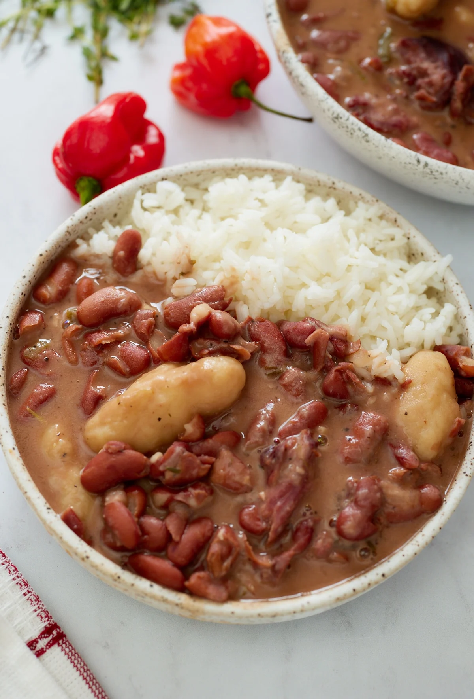

Stew Peas

Description
Stew Peas is one of Jamaica’s most popular dishes amongst a few others on my post.
Traditional stew peas for the pork eater will most definitely have pigs tail. For non-pork eaters, it may be cooked with beef stew instead.
And for vegetarians, it can be done just as delicious without meat and any choice of vegetable such as sweet potato or pumpkin pieces.
Ingredients
- 3 Lbs. Pigs tail or Beef
- 2 Cups Dry Red Kidney Beans
- 4 Cloves garlic minced
- 10 Cups Water divided
- 4 Stalks Scallion
- 6 Sprigs Fresh Thyme
- 1 Scotch Bonet Pepper
- 1/2 Tbsp Pimento Berries
- 2 Cups Coconut Milk
- 1 Cups Flour
- 1/8 tsp. Salt
- 1/4 Cup + 1 & 1/2 tsp Water
Steps
- Wash peas and set in a deep pot with about 6 cups of water or enough to cover peas and the garlic. Soak overnight in a covered pot.
- Wash off excess salt off pigstail and boil in fresh water for about 10-15 minutes.
- Change water and place in pressure cooker for about 20 minutes after hissing starts. Remove and rinse in cold water and cut up at joints.
- When ready to cook, Place the peas and beef (if using) along with the garlic, 2 stalks of scallion roughly cut, 2 sprigs of thyme leaves, a small amount of the pimento and enough water to adequately cover in the pressure cooker, cook on high for 15-20 minutes after hissing starts.* Remove and check if both are almost cooked and tender. Beef may finish before the peas, if so remove beef, cut up and set aside. Continue pressuring peas as needed another 5-10 minutes.
- Make dough for dumplings by placing flour & salt in a medium bowl and whisk together. Add water, first stirring with a spoon until dough comes together , then use hands to knead, adding more flour as needed so the dough is not sticky. Knead around a couple minutes. Pinch off about 2 Tbsp pieces of dough at a time and roll in palm of both hands, making the ends thin to create what we Jamaicans call spinner dumplings. Add to pot when peas are soft and in the last 15 minutes of cooking.
- At the point where both meats and peas are soft enough but not about to mash, you will want to stop pressuring and transfer to a regular deep pot to finish cooking. Add the peas.
- Add coconut milk, 2 stalks of scallion, 4 sprigs of thyme leaves, the rest of pimento and 1 whole scotch bonnet pepper (poke a small hole in it with a sharp knife) right after dumplings. Cook on medium heat for about 15 minutes. Add enough water so not thick but semi-liquidy. Or to thickness of your preference.** (optional) Remove pepper from pot if you don't want it to become too spicy.
- If using a regular pot), Place peas and beef (if using) in a large pot to boil. In a sperate pot, still boil pigstail by itself about 20 minutes, cut in pieces, add to peas and continue boiling on high heat. In a regular pot it may take at least 1-1/2 hour or more for peas and beef to cook. Cook until when cut with any utensil, it is mostly soft, and beef mostly soft as well.
- When everything is mostly soft, continue adding the other ingredients and cooking according to above directions.
- Best served with white rice.